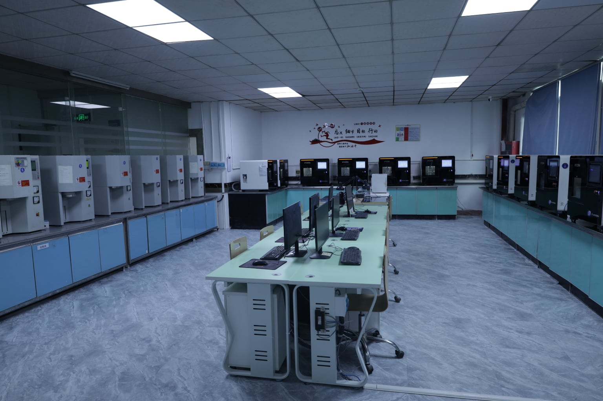
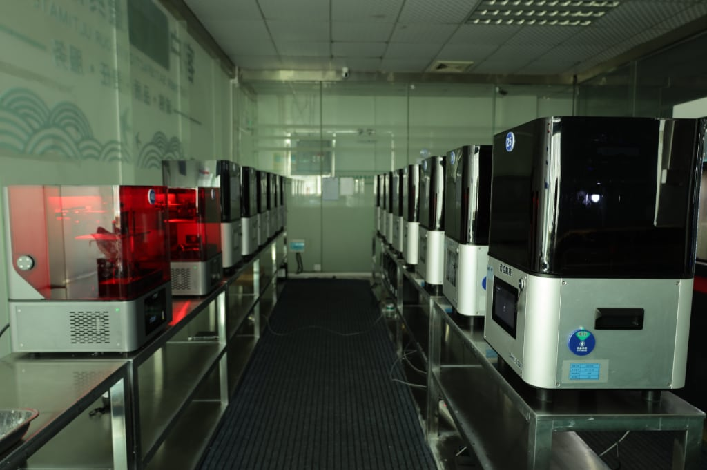
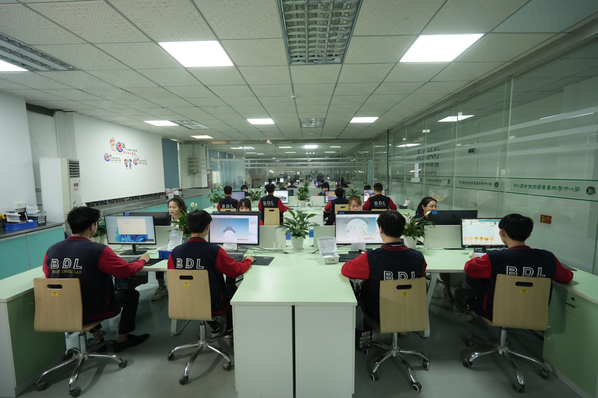
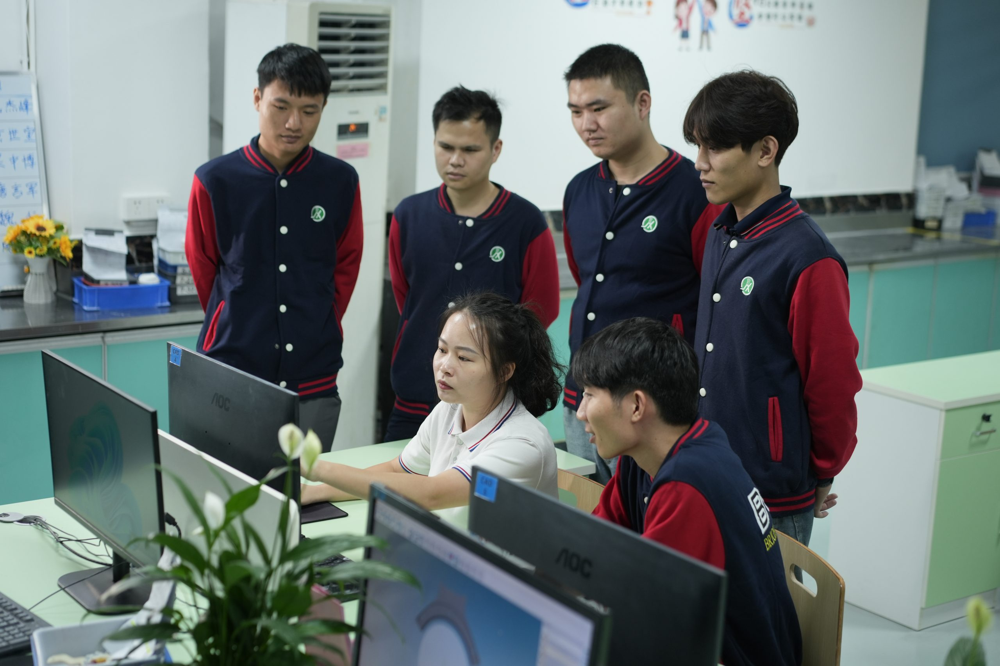
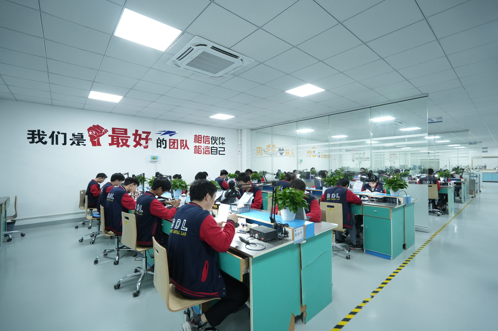
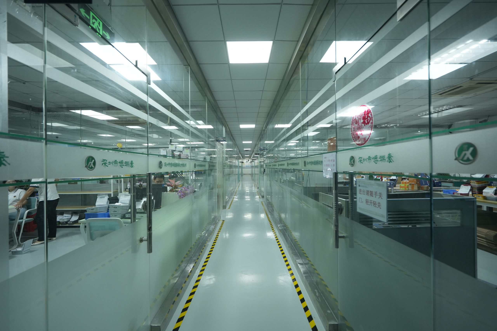
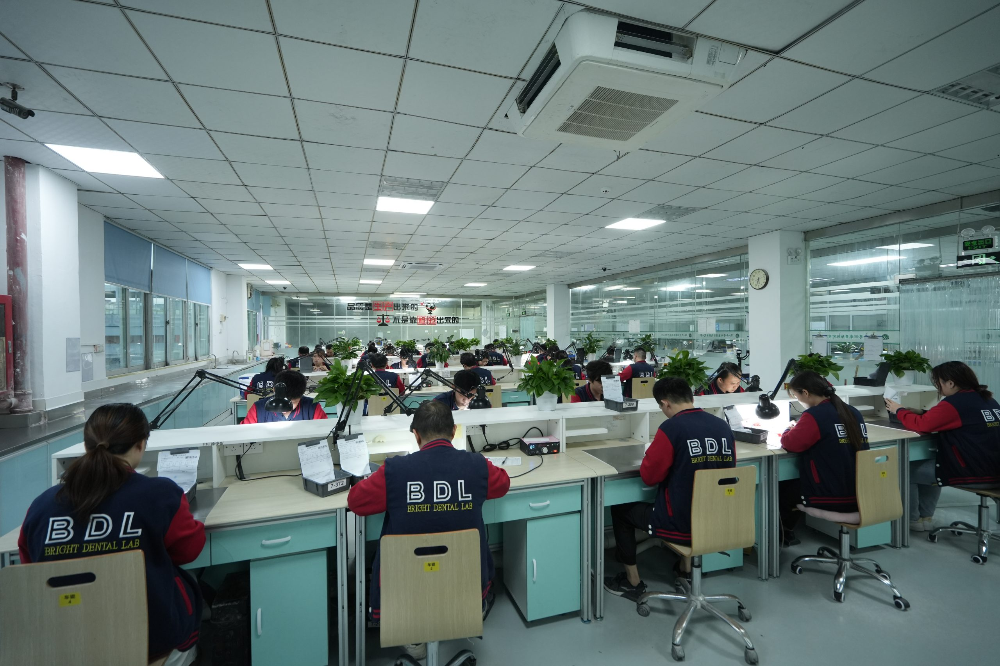
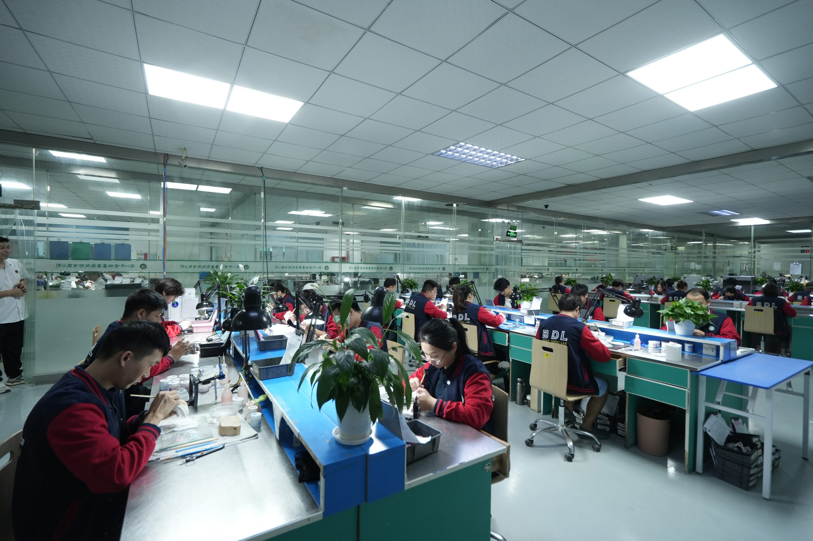

FACILITY VIEW
A production floor built around digital handoff, finishing discipline, and final inspection
This tour gives clinics a clearer look at what happens inside the lab, how cases move between teams, and where quality control sits in the workflow.
Digital files and prescription details move into planning before production begins.
Departments for CAD/CAM, ceramic work, finishing, and inspection are reflected throughout the gallery.
This page is especially useful for clinics evaluating a new outsourcing partner before trial cases.

WHAT THIS TOUR SHOWS
The checkpoints clinics usually want to see before scaling volume
Rather than a generic gallery, the page now highlights the kinds of spaces and workflow stages that matter most during vendor evaluation.
01
Digital Intake
Incoming scans, photos, and RX notes are organized before design and manufacturing begin.
02
CAD/CAM Production
Milling and machine-based workflows support repeatability for outsourced restorative work.
03
Ceramic & Finishing
Esthetic refinement, shade work, contouring, and hand-finished details remain visible parts of the process.
04
Quality Control
Final inspection and release checks help protect consistency before dispatch and delivery.

DEPARTMENT FLOW
A typical case moves through several controlled handoffs
Planning and preparation
Case requirements, digital files, and restorative direction are checked before the work enters active production.
Production and esthetics
CAD/CAM equipment and hand-finishing teams work together instead of existing as separate worlds.
Inspection and dispatch
The final release stage remains part of the facility story because that is where outsourced trust is either earned or lost.






REMOTE TRUST
You do not need an in-person visit to understand how the lab works
For many clinics, this page is the first confidence-building step before sample cases. It pairs well with certificates, downloads, and a direct case review conversation so the relationship starts with clearer expectations.
Best companion page
Certificates helps procurement or clinical leadership validate trust signals alongside the tour.
Best next action
Send A Case is the fastest way to move from visual review into a real workflow test.
What this page is for
A trust-building facility view for dentists, practice managers, distributors, and coordinators comparing outsourced dental lab partners.